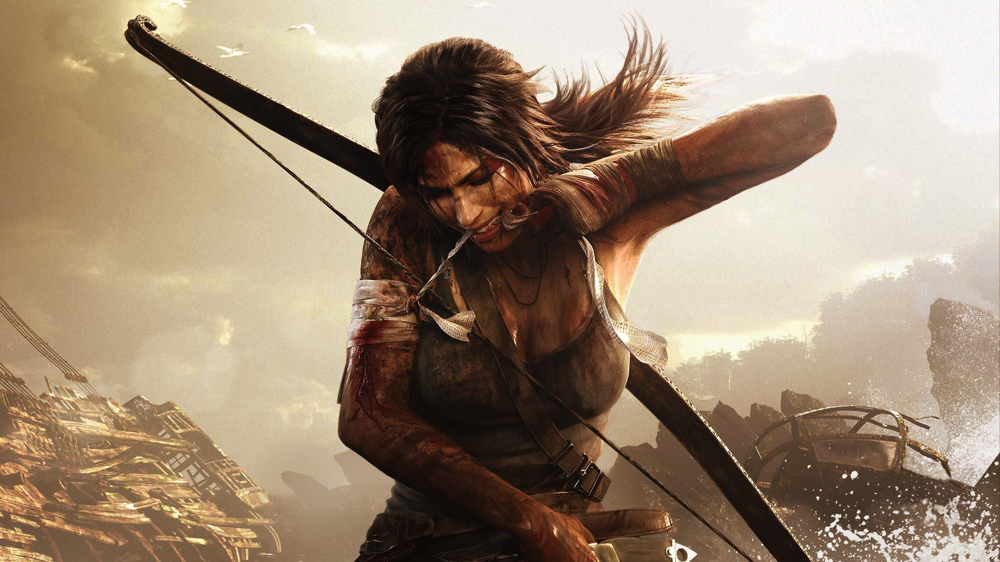
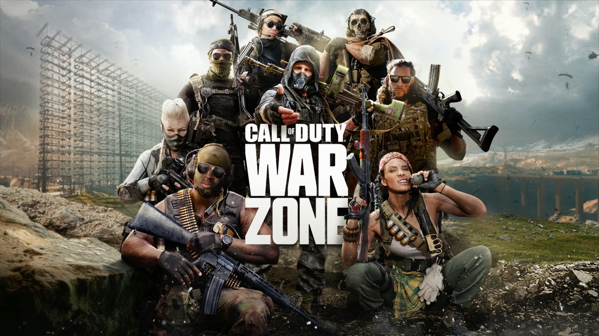
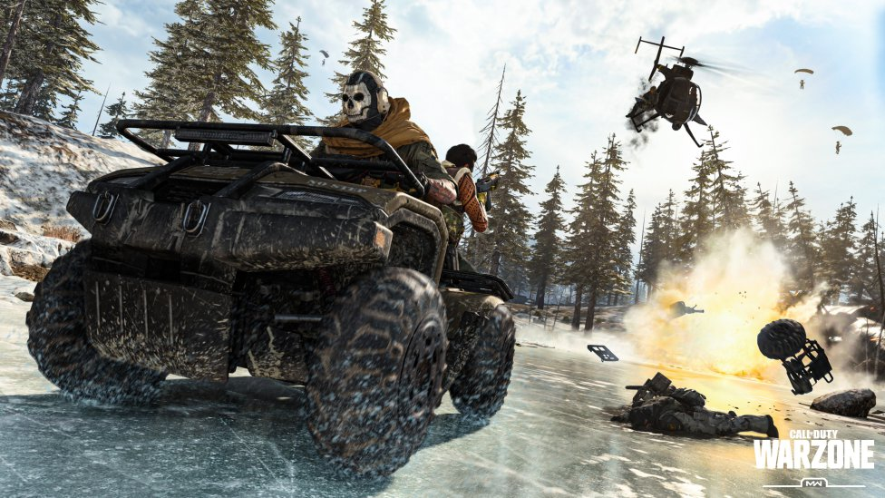

clases

SHOOTERGEARS OF WAR
Después de despejar e inspeccionar la Plaza de Embry y de no obtener resultados positivos, el escuadrón recibe órdenes para alargar la búsqueda a la Casa de los Soberanos. Al arribar al edificio, descubren que el lugar fue tomado por los Locust, y deben enfrentar a unos cuantos de ellos. Cuando creen haber limpiado el lugar, el Cabo Anthony Carmine es asesinado por el disparo de un Francotirador durante un descuido. Delta debe entonces contener a los refuerzos Locust.
Mientras esperan su extracción, numerosos Locust preparan una emboscada a sus alrededores, y, cuando el King Raven finalmente aparece, es derribado por Nemacysts. El Tte. Kim es sorprendido por la espalda por el General RAAM, quien lo ejecuta a sangre fría. Los Gears restantes, superados en número y siguiendo el objetivo de obtener el Resonador, se resguardan en la Tumba de los Desconocidos. Dentro de este sitio, el equipo debe lidiar con una Berserker, a quien deben encaminar al patio para poder eliminarla con el Martillo del Alba.
TRAILER-----------FANARS

SUPERVIVENCIA
Rise of the Tomb Raider es la secuela de Tomb Raidery el décimo juego de la línea principal de la saga Tomb Raider. Fue desarrollado por Crystal Dynamics y publicado por Square Enix. Salió a la venta el 13 de noviembre de 2015 de forma exclusiva para XBox 360 y Xbox One.
Poco después Square Enix reveló que llegaría una versión para PC el 29 de enero de 2016 a través de Steam y para Playstation 4 a finales de 2016. En abril de 2018 también se adaptó para macOS y Linux. El 19 de noviembre de 2019 pasó a formar parte de los títulos de lanzamiento de Google Stadia. 
En su primera aventura, Lara Croft se erigió como una auténtica superviviente, pero vislumbró un mundo secreto más profundo en su interior. En el siguiente capítulo de su viaje, Lara debe utilizar sus habilidades de supervivencia e ingenio para aceptar su destino como aventurera y saqueadora de tumbas.
Después de encontrarse con un ser inmortal, Lara pasó un año investigando la vida eterna tanto para entender como para probar lo que vio. La investigación la condujo en la misión de encontrar Kitezh, una ciudad mística fundada y perdida en lo que ahora es la tundra de Siberia. 
SUPERVIVENCIA RISE OF THE TOMB RAIDER
TRAILER-----------FANARS

COMPETITIVO
Call of Duty: Warzone es un videojuego de acción first person shooter tipo battle royale a cargo de Infinity Ward y Activision para PC, PlayStation 4 y Xbox One para hasta 150 jugadores. Un título free to play con una gigantesca arena de combate en el mundo de Modern Warfare; lánzate, ármate hasta los dientes, saquea recompensas y lucha por llegar a lo más alto. 
COMPETITIVO COD WARZONE
TRAILER-----------FANARS